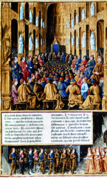
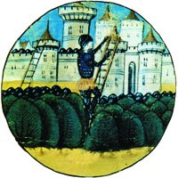
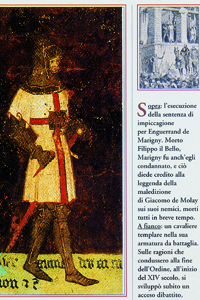

Lezione 8  Crociate
Crociate

-
295
545
-
180
200
-
335
595
-
358
615
-
375
585
ASIA MINORE
Nel 1071 i Turchi Selgiuchidi (così chiamati perché guidati dal condottiero Selgiuk) sconfiggono l’Impero bizantino, occupano l’Asia Minore, strappano agli arabi la Siria e la Palestina. Se prima gli arabi garantivano ai pellegrini cristiani l’accesso - a pagamento - ai luoghi sacri (al Santo Sepolcro di Cristo), con l’occupazione turca scoppiano incidenti.
CLERMONT FERRANT
Papa Urbano II bandisce la Prima crociata nel 1095 dal pulpito della cattedrale di Clermont Ferrand: ancora quattro secoli dopo è vivo il ricordo della solenne cerimonia, come dimostra questa miniatura borgognona del 1490. 1096: si ha una prima “crociata dei poveri”, una spedizione raccogliticcia guidata da Pietro l’Eremita che finisce nel disastro.
GERUSALEMME
La Prima crociata ufficiale (1096-1099), è promossa dal papa Urbano II e guidata da Raimondo di Tolosa e Goffredo di Buglione. Ha l’appoggio delle città marinare, in particolare di Genova. Si conclude nel 1099 con l’assedio e la conquista di Gerusalemme: in questa miniatura francese del tardo Quattrocento vediamo una fantasiosa ma efficace immagine di Goffredo che espugna i bastioni della Città Santa.
GERUSALEMME
La croce rossa in campo bianco è l’uniforme dei Cavalieri templari, il cui ordine, fondato da San Bernardo di Chiaravalle nel 1120 per difendere le conquiste in Terrasanta, aveva sede a Gerusalemme.PALESTINA
Durante la Prima crociata i cristiani conquistano Gerusalemme e creano il regno di Gerusalemme (che durerà fino al 1244), il principato di Antiochia (fino al 1268 retto dai Normanni di Sicilia), le contee di Edessa (retta dai Fiamminghi fino al 1144) e di Tripoli (retta dai francesi fino al 1289).